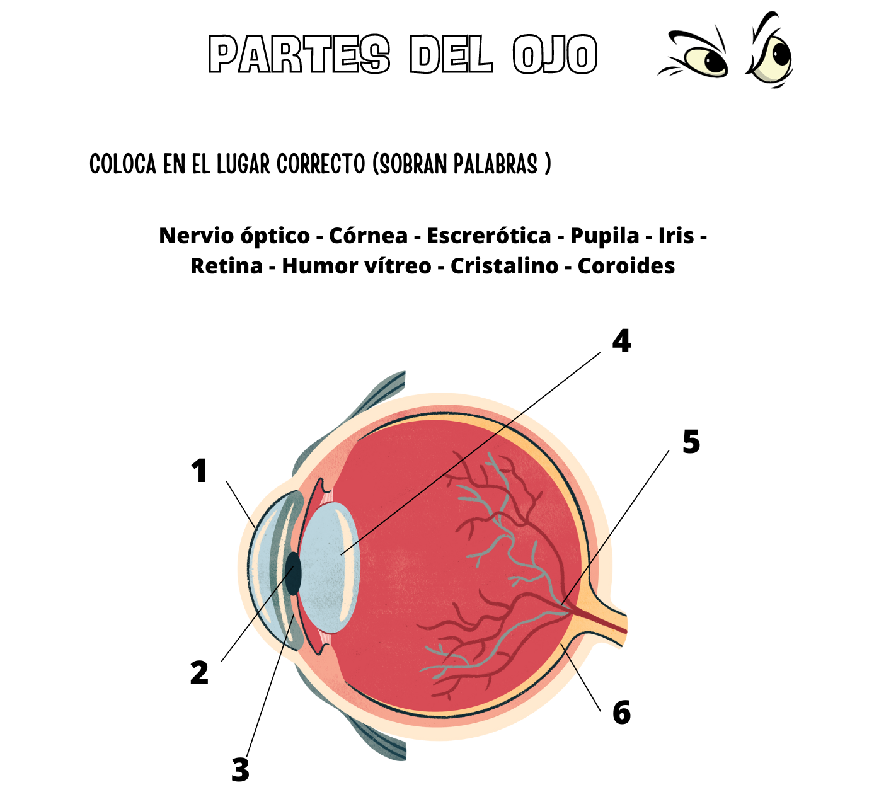
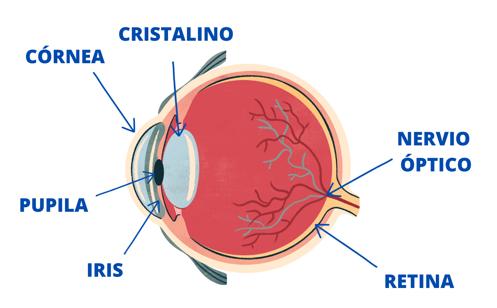
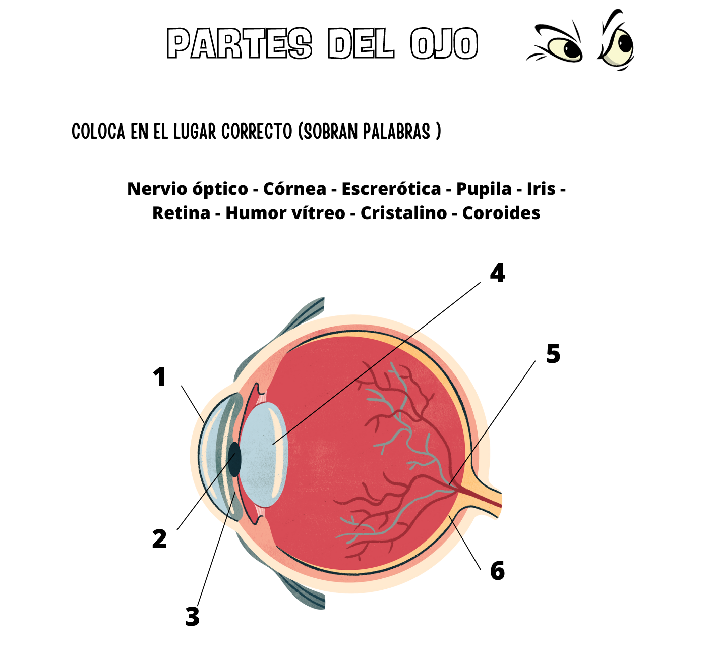
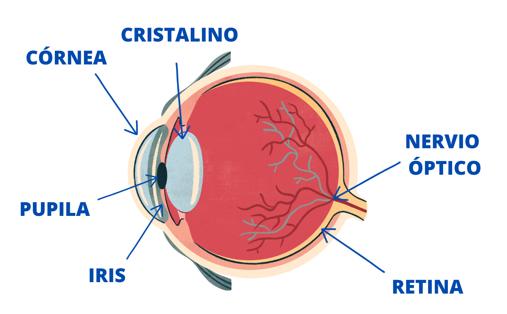

Partes del ojo


Todas las partes del ojo trabajan en conjunto para ayudarnos a ver.
1º Los rayos de luz rebotan en el objeto que estas mirando y esa luz llega a tus ojos.
2º Entra por la CÓRNEA (parte frontal transparente del ojo). La córnea tiene forma curva para ayudar a enfocar al ojo.
3º Los rayos de luz pasa por un hueco llamado PUPILA. Es el circulo de color rodeado de la parte de color llamada IRIS. El iris controla la cantidad de luz que entra a través de la pupila. Contrae la pupila cuando hay mucha luz y agranda la pupila cuando hay poca luz.
4º Detrás encontramos el CRISTALINO que ayuda a enfocar la luz que entra para poder ver claramente.
5º Luz luz llega a la RETINA, parte posterior del ojo. Allí encontramos muchísimas células sensibles a la luz que conviertes la luz en una señal eléctrica.
6º Esta señal viaja por el NERVIO ÓPTICO hasta nuestro cerebro. Se encarga de interpretar las imágenes.
Los rayos de luz están formados por unas partículas llamadas fotones. Los fotones se trasportan en forma de onda y dependiendo de la longitud de onda
Descarga aquí una guía del taller del ojo humano donde explica todo lo necesario para llevarlo a cabo.
Obra publicada con Licencia Creative Commons Reconocimiento Compartir igual 4.0